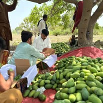
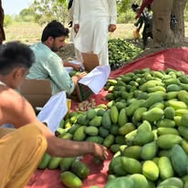
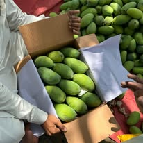
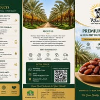

Mature Palm Field Installation
Authentic media shows a large palm being positioned with machinery while the field team prepares the planting area.
- Machinery-assisted handling
- On-site crew
- Prepared installation area
Evidence over claims
Only projects supported by authentic company media belong here. Stock imagery and AI-generated scenes are not presented as completed work.
Discuss your project →
What buyers need to know
Authentic media shows a large palm being positioned with machinery while the field team prepares the planting area.
The public post does not specify location, client, date, quantity, project challenge or follow-up result.
Future projects should include before, during and after imagery plus written scope, measurable outcome and customer permission.
Authentic Facebook archive
Every image below comes from the company’s public media. The large installation image is project evidence; smaller images document seasonal business activity and product communication.




Latest uploads
Photos and videos published from the admin dashboard for this page. New uploads appear here automatically.
Loading gallery…
Direct, structured enquiry